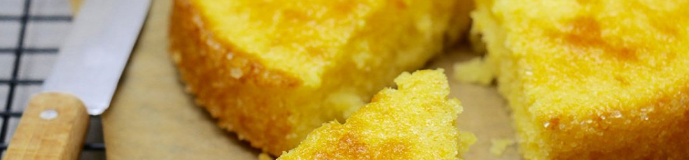

Gâteau au citron
Liste des ingrédients
- 125 g de beurre
- 125 g de sucre
- 125 g de farine
- 2 oeufs
- 2 citrons non traités
- 1 sachet de levure chimique
- 1 pincée de sel
Etapes de la recette
- Dans un saladier, fouettez le beurre mou avec le sucre pour obtenir un mélange crémeux, ajoutez-y les oeufs un par un puis mélangez
- Râpez le zeste et prélevez le jus des deux citrons, rajoutez à la préparation en mélangeant
- Mélangez la farine, la levure chimique et le sel puis ajoutez le tout à la préparation en mélangeant légèrement
- Beurrez et sucrez deux petits moules à charnière de 16 cm ou un seul moule de 18 à 22 cm puis répartissez-y la pâte
- Enfournez à 180° pendant 20 à 25 minutes. Laissez refroidir 10 minutes avant de démouler